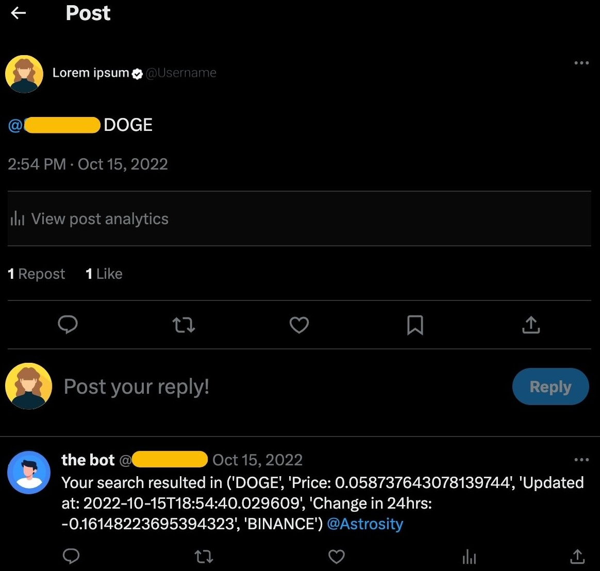
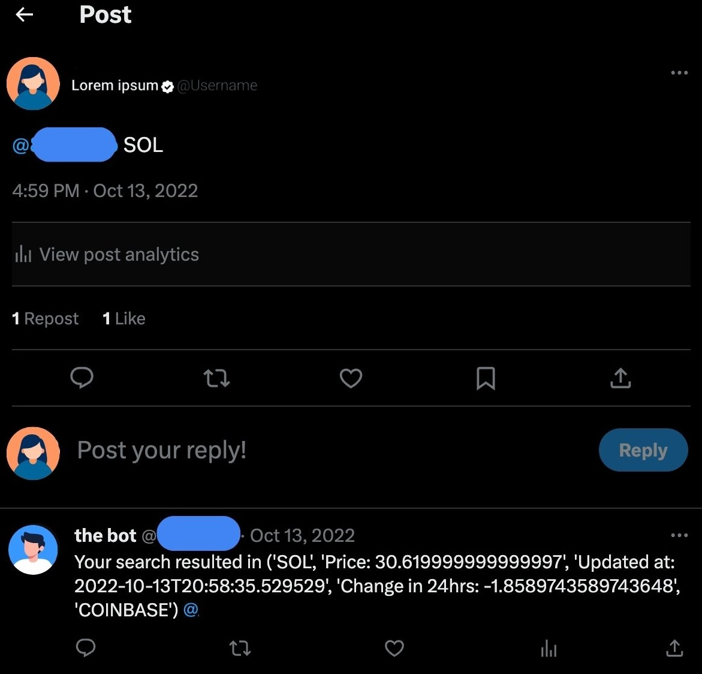

The main purpose of this project was to have an automated twitter account that would be able to provide users cryptocurrency exchange data at a moments notice while browsing the website. The automated account will then respond to the user with the requested data when the user calls for the app and tweets out the requested currency. Below is an examples.

The above image depicts the user requesting current data on the "Doge" currency
The above image depicts the user requesting current data on the